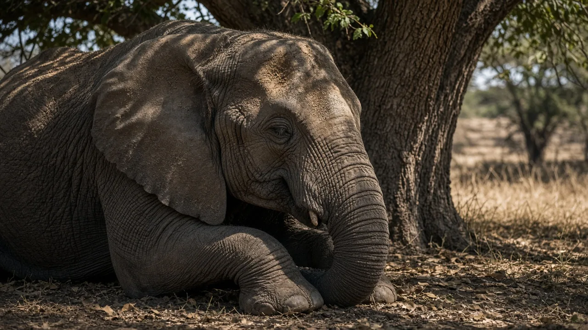

How long do elephants sleep?
Not long. The only study to track sleep in wild elephants found that two African savanna elephant matriarchs in Botswana slept about two hours in every 24, mostly between about 2 and 6 in the morning, and often while standing. They lay down to sleep only every third or fourth day, and sometimes went up to 46 hours without sleeping at all. Elephants in zoos tend to sleep longer, often several hours a night, and lie down more often.

The short answer
Elephants are among the lightest sleepers known in the mammal world. Wild African savanna elephants appear to sleep only about two hours a day, usually split into short bouts in the small hours of the morning, and much of that sleep happens standing up. Captive elephants, which do not have to walk long distances for food and water or watch for danger, sleep noticeably longer. So the honest answer is "about two hours in the wild, several hours in human care," with plenty of variation between individuals and nights.
How scientists measured sleep in wild elephants
Measuring sleep in a wild animal the size of a truck is hard. You cannot wire up its brain in the bush, and you cannot sit beside it every night. In a 2017 study published in PLOS ONE, Nadine Gravett, Paul Manger and colleagues found a clever workaround. They fitted two adult female matriarchs in Chobe National Park, Botswana, with GPS collars and implanted a small activity logger, similar to a fitness tracker, under the skin of the trunk. A portable weather station recorded conditions on the ground.
Why the trunk? An elephant's trunk is almost never still while the animal is awake. It is constantly smelling, touching, feeding or swinging. The team reasoned that long spells with no trunk movement meant the elephant was very likely asleep. A gyroscope in the collar showed whether the animal was standing or lying down, so the researchers could tell standing sleep from lying-down sleep.
What they found
Averaged over the study, the two elephants slept about two hours per 24 hours, the lowest total recorded for any mammal measured at that time. Most of that sleep came between about 2 and 6 in the morning, in several short bouts rather than one long stretch. The timing of sleep tracked local temperature and humidity, and the elephants picked a new sleeping spot each night.
The more surprising results were about posture and timing. The elephants usually slept standing. They lay down to sleep only every third or fourth day. On five occasions, the matriarchs went without sleep for up to 46 hours, at times covering around 30 kilometres in 10 hours, possibly to avoid lions, poachers or a bull in musth. They showed no sign of making up the lost sleep afterwards, which is unusual, since most mammals sleep more after being deprived.
Two animals is a small sample, and the authors say so. But because these were wild matriarchs living normal lives, the study offers the best direct look so far at how elephants sleep in nature. For more on how these leading females guide their families, see our elephant behavior page.
Do elephants sleep standing up?
Yes, a lot of the time. An elephant's legs are built like columns, with the bones stacked almost vertically under a heavy body. That skeletal design, covered on our elephant anatomy page, lets an elephant stay upright for long periods without much muscle effort. Standing sleep also means the animal can react faster to danger. Getting a several-tonne body up off the ground takes time and effort.
Lying down matters, though. In many mammals, the deepest stage of sleep linked to dreaming, rapid eye movement or REM sleep, comes with a loss of muscle tone. An animal in REM sleep would struggle to stay standing. The Botswana team suggested that wild elephants may get REM sleep only on the nights they lie down, which would mean far less REM than most mammals. That idea has not yet been confirmed with brain recordings in wild elephants.
How elephants sleep in zoos
Older research on captive animals gives a different picture. Irene Tobler's 1992 study in the journal Sleep observed Asian elephants in captivity at night and found they slept for several hours a night, considerably more than the wild Botswana matriarchs, mostly in the second half of the night. Much of that sleep was lying down.
A large 2016 study by Margaret Holdgate and colleagues, part of a wider welfare project on elephants in North American zoos, used leg-worn accelerometers to record when dozens of elephants lay down. They found that most elephants lay down for part of most nights, but the amount varied widely between individuals. Factors such as age and the type of flooring were linked to how much time animals spent lying down, with softer surfaces such as sand associated with more recumbent rest. That is one reason good facilities now provide sand floors and outdoor space, a point we also cover in our elephant sanctuary checklist.
Why do elephants sleep so little?
Across mammals, there is a broad pattern: large plant eaters tend to sleep less than small animals and meat eaters. In a 2005 review in Nature, sleep researcher Jerome Siegel described how total sleep time varies hugely between species, from horses and giraffes that sleep only a few hours to some bats and small rodents that sleep most of the day. Body size, diet and safety while sleeping all seem to play a role.
Elephants fit the large herbivore pattern well. An adult needs to eat a vast amount of low-quality plant food each day, which leaves little time for rest. In the wild, they also travel long distances to water and must stay alert to threats, including people. Sleeping in short, standing bouts is a practical compromise.
Interestingly, elephants still have excellent memories despite so little sleep. Scientists are interested in how they manage this, since sleep is thought to help memory in many animals. Read more in do elephants really never forget? and on our elephant intelligence page.
Do African and Asian elephants sleep differently?
We cannot say for certain yet. The wild tracking data come from African savanna elephants, while the classic captive study looked at Asian elephants. Comparing the two is tricky because the conditions were so different. No one has published comparable wild sleep data for Asian elephants or for the elusive African forest elephant.
The bottom line
How long do elephants sleep? In the wild, about two hours a day, mostly in the hours before dawn, often standing, with lying-down sleep only every few nights. In zoos, several hours, with more time lying down. That makes elephants some of the shortest sleepers among mammals, a pattern linked to their size, diet and the need to stay alert. Protecting quiet, safe places where wild herds can rest is part of protecting elephants themselves, a theme of our elephant conservation page.
Frequently asked questions
Do elephants sleep standing up?
Yes, often. Wild African elephants do much of their sleeping on their feet. Their straight, pillar-like legs let them rest standing with little muscular effort. They do lie down to sleep, but in the wild study this happened only every few nights and for short periods.
How long do baby elephants sleep?
Calves sleep more than adults and lie down far more often, frequently stretched out flat beside their mother while the family rests nearby. No study has measured calf sleep with the precision used for adult matriarchs, so exact hours are not well established.
Do elephants dream?
We do not know. Dreaming in people happens mostly in REM sleep, which in many mammals occurs while lying down because muscles go slack. Researchers suspect wild elephants may get REM sleep only on the nights they lie down, but no one has recorded elephant brain activity in the wild to confirm it.
Why do elephants sleep so little?
Large plant-eating mammals spend most of the day feeding, and elephants need huge amounts of food. Across mammals, bigger herbivores tend to sleep less. Predator risk, poachers and the need to move to water may also cut sleep short in the wild.
Sources
- Gravett, N., Bhagwandin, A., Sutcliffe, R., Landen, K., Chase, M. J., Lyamin, O. I., Siegel, J. M. and Manger, P. R. (2017). Inactivity/sleep in two wild free-roaming African elephant matriarchs: does large body size make elephants the shortest mammalian sleepers? PLOS ONE 12, e0171903. DOI 10.1371/journal.pone.0171903
- Tobler, I. (1992). Behavioral sleep in the Asian elephant in captivity. Sleep 15, 1 to 12. DOI 10.1093/sleep/15.1.1
- Holdgate, M. R., Meehan, C. L., Hogan, J. N., Miller, L. J., Rushen, J., de Passillé, A. M., Soltis, J., Andrews, J. and Shepherdson, D. J. (2016). Recumbence behavior in zoo elephants: determination of patterns and frequency of recumbent rest and associated environmental and social factors. PLOS ONE 11, e0153301. DOI 10.1371/journal.pone.0153301
- Siegel, J. M. (2005). Clues to the functions of mammalian sleep. Nature 437, 1264 to 1271. DOI 10.1038/nature04285
Cite this page
APA
TuskWise. (2026, October 14). How long do elephants sleep? https://tuskwise.com/blog/how-long-do-elephants-sleep.html
MLA
“How long do elephants sleep?” TuskWise, Joshua Israel Ventures LLC, 14 Oct. 2026, tuskwise.com/blog/how-long-do-elephants-sleep.html.
Chicago
TuskWise. “How long do elephants sleep?” Joshua Israel Ventures LLC. Last modified October 14, 2026. https://tuskwise.com/blog/how-long-do-elephants-sleep.html.